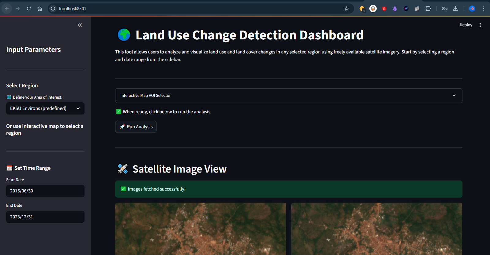
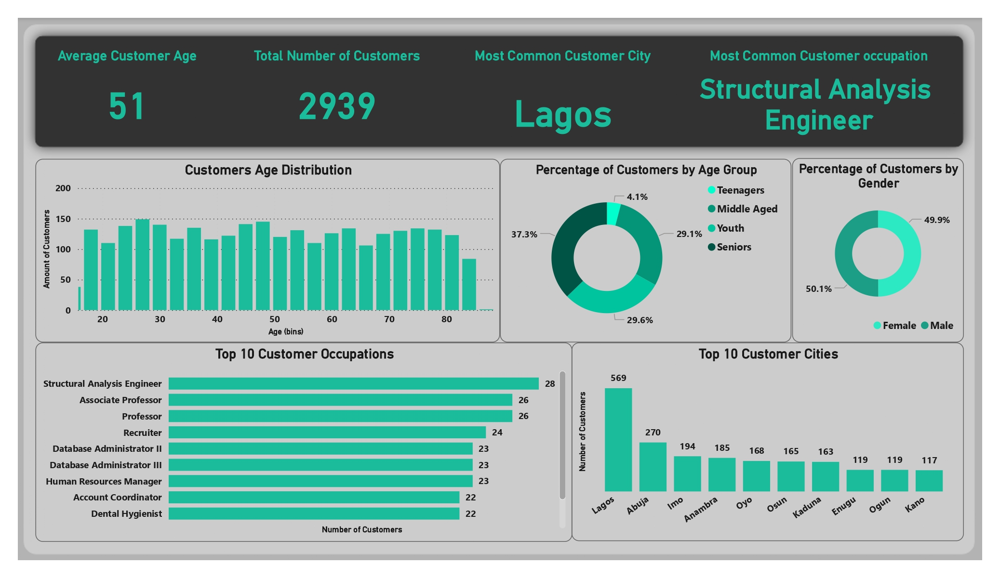

2026

Spotify Wrapped 2025 Analysis
Moving beyond the standard "Wrapped" to uncover the granular details of my year in audio.

Electronics Store Sales Analysis
Capstone project from a 5-week data analytics internship, showcasing progression from foundational Excel functions to dynamic business intelligence reporting.
2025

Adidas US Sales Performance (2020-2021)
Evaluating explosive growth, regional dominance, and the efficiency of online sales channels.

Web-Based Change Detection Dashboard
A cloud-powered geospatial application detecting land use dynamics using Sentinel-2 imagery, Google Earth Engine, and K-Means clustering.

Banking Data Storytelling & Risk Analytics
Uncovering customer demographics, loan default risks, and transaction behaviors for 2,939 bank customers.
2024

Historical Airplane Crash Analysis
An end-to-end Python project exploring a century of aviation safety, deployed as an interactive Streamlit web application.

COVID-19 Global Pandemic Analysis
Exploring the "GDP Paradox," healthcare capacity, and the impact of government stringency on pandemic mortality.